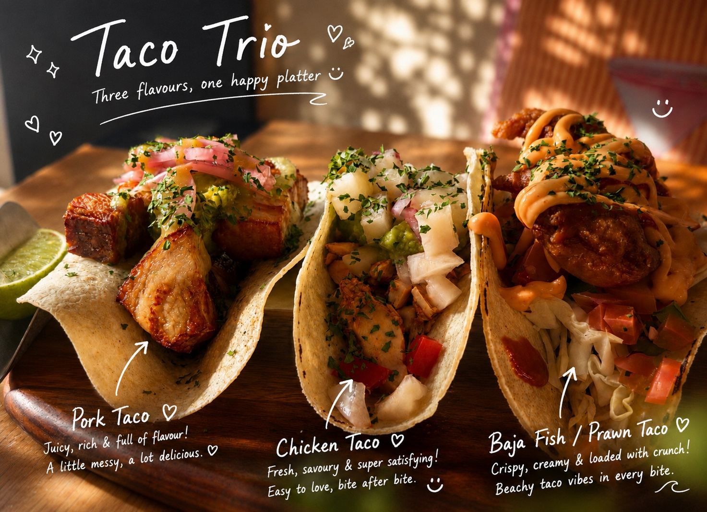
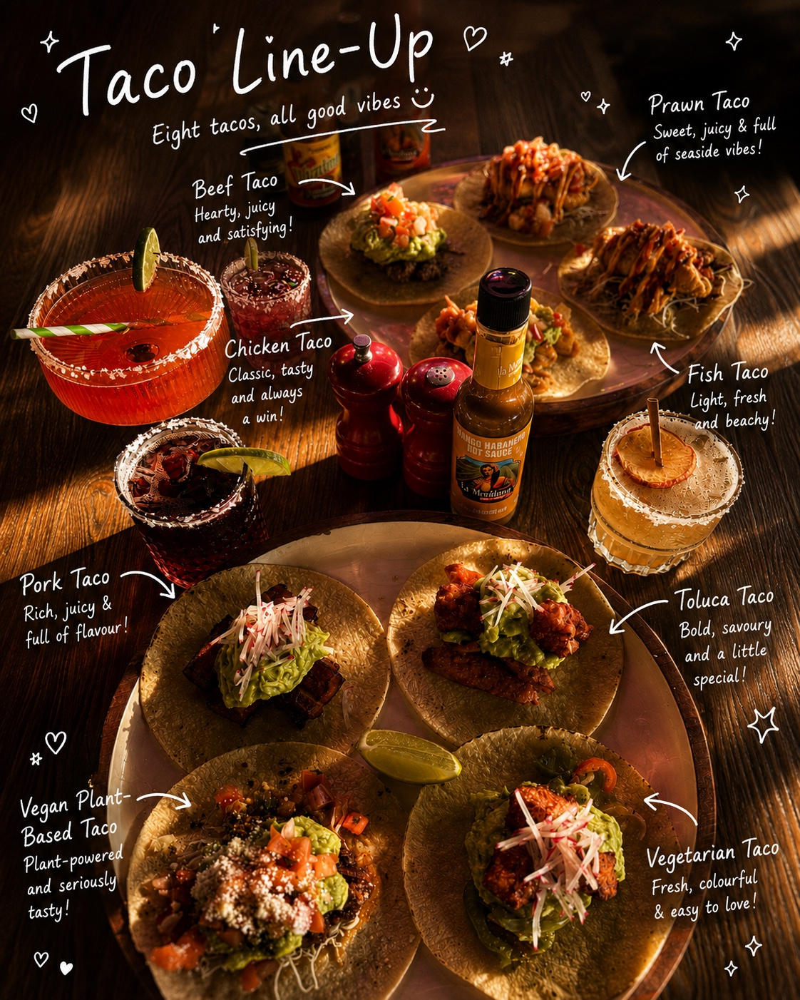

Pork Taco
Juicy, rich and full of flavour.
California Republic · St Ives
Meet the flavours, find your favourite and leave a little room for what comes next.
Meet the tacos ↓01 · A happy platter
Juicy, fresh and full of personality. Start with three California Republic favourites and pick the one calling your name.

Tap to explore full size ↗Juicy, rich and full of flavour.
Fresh, savoury and easy to love.
Crispy, creamy and loaded with crunch.
02 · Find your favourite
Classic favourites, bright coastal flavours and plant-powered choices—all gathered around one table.

Tap to explore full size ↗The story is still cooking
More tacos. New flavours. Fresh photos.
There is always another chapter coming to the table.